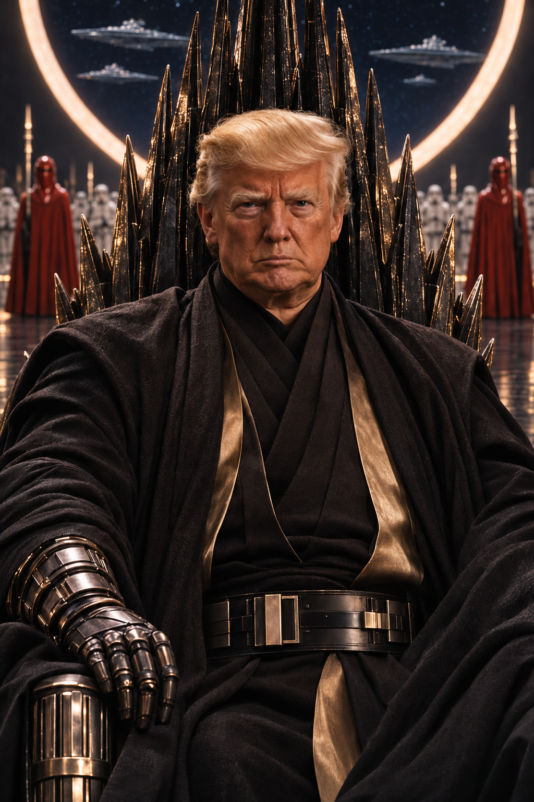
DONALD TRUMP
At the center of the political conversation.
// THE THRONE AWAITS
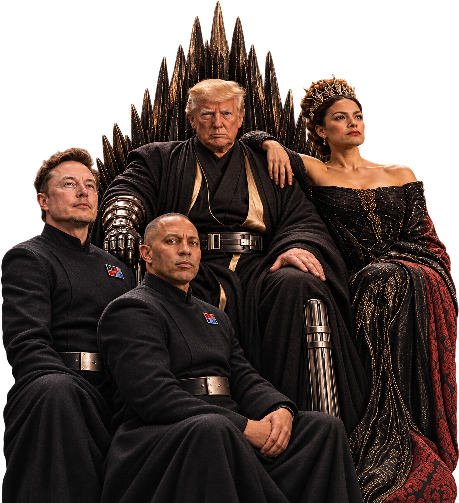
Elon’s post imagined a different future for the Skywalkers.
“This is what they stole from us.”
We reimagine that story through the lens of the midterm elections.
VIEW THE ORIGINAL POST ↗Four familiar faces. One fictional galaxy.
Countless possible futures.

At the center of the political conversation.
// THE THRONE AWAITS
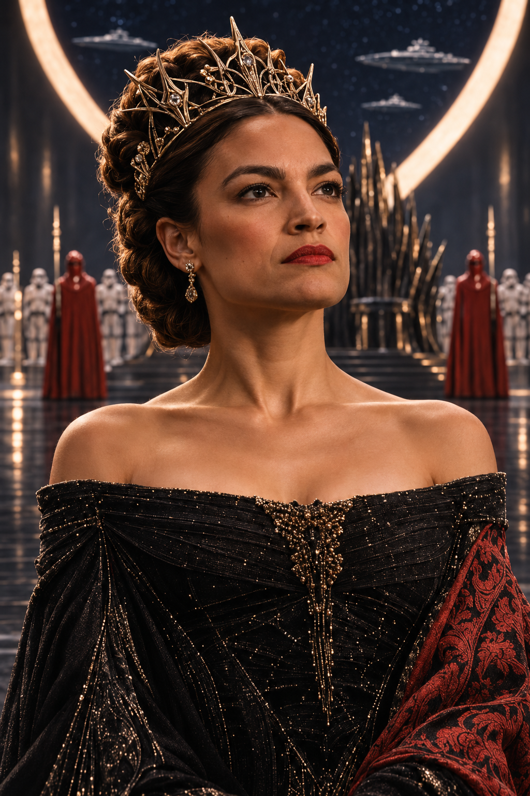
A progressive voice with a different vision.
// EVERY STORY HAS TWO SIDES
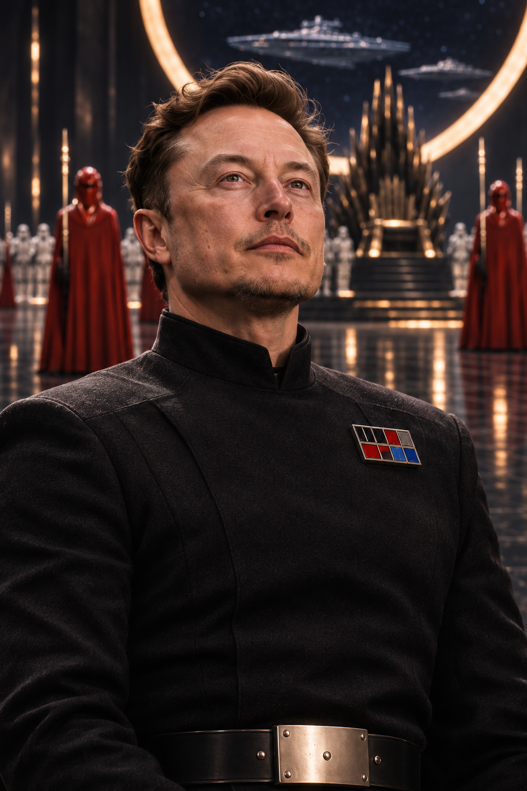
The post that inspired our imagined universe.
// ONE POST. MANY MEANINGS.
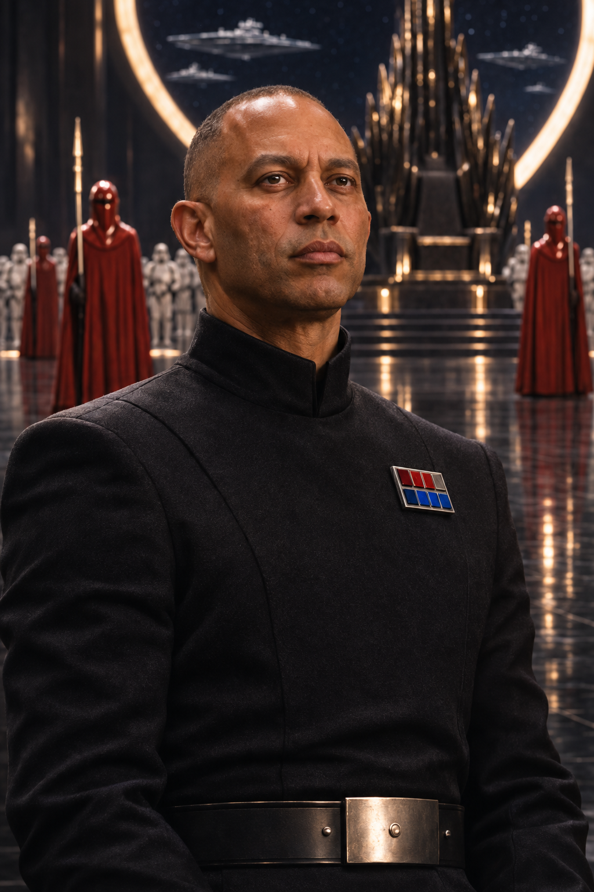
A Democratic leader navigating the next chapter.
// THE BOARD IS SET
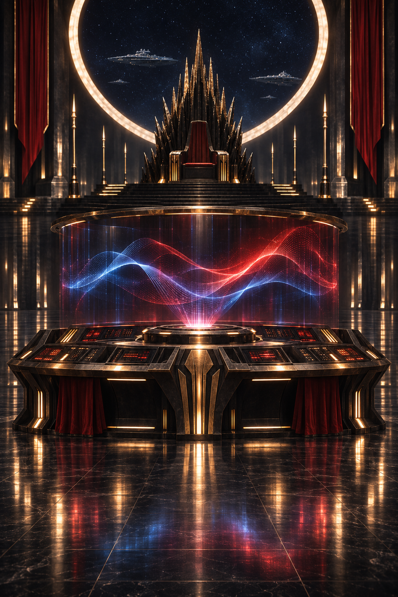
A single caption with room for interpretation.
// THE ARCHIVE IS OPEN
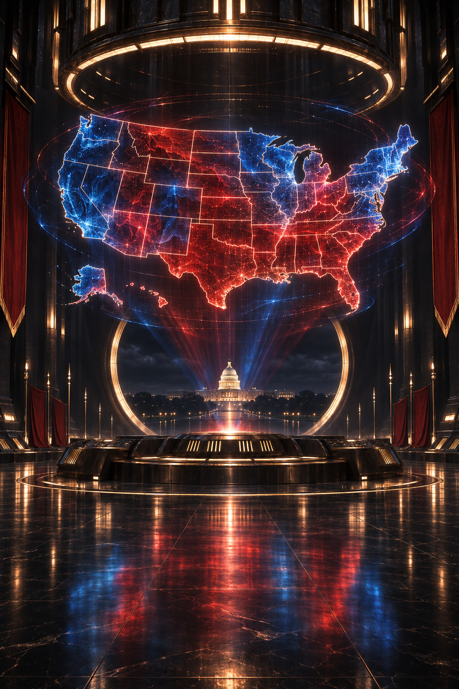
A moment with more than one possible ending.
// THE FUTURE IS UNWRITTEN
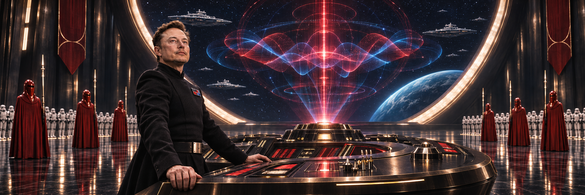
A moment becomes a message. A message becomes a world.
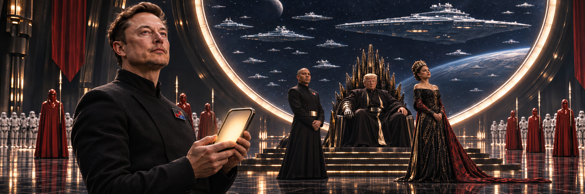
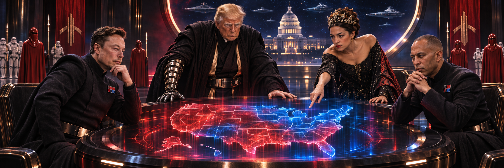
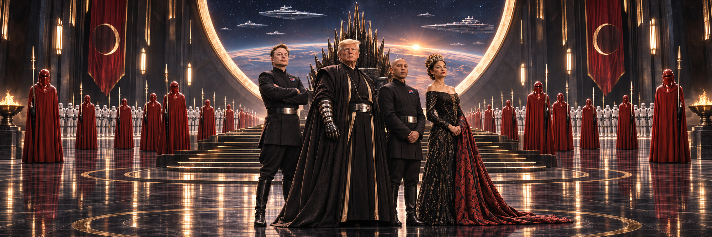
One image. A thousand interpretations. An entire galaxy of possibilities.
A familiar caption becomes the beginning of our imagined story. Four public figures enter a fictional universe where different visions meet and election night brings new questions.
What did the post mean to you? What happens when the players meet? The next chapter belongs to the conversation.
What They Stole is an independent fictional meme project. Neither the people depicted nor Lucasfilm nor any political organization has endorsed it. The story does not claim a hidden message or promise financial returns.
Three possible configurations of Congress. One question: what happens next?
Imagine Republicans holding both chambers. How might the relationship between Congress and the White House shape the story?
Fictional scenarios, not election results, forecasts, trading advice or price predictions. The accompanying map is illustrative.
THE FUTURE IS YOURS TO IMAGINE.